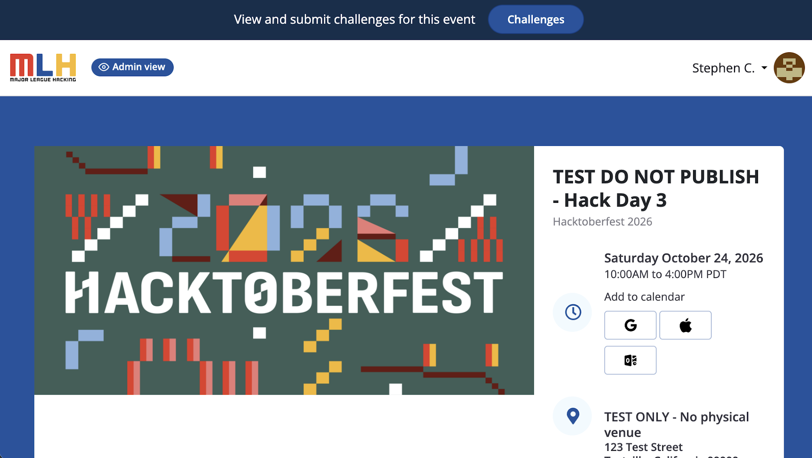
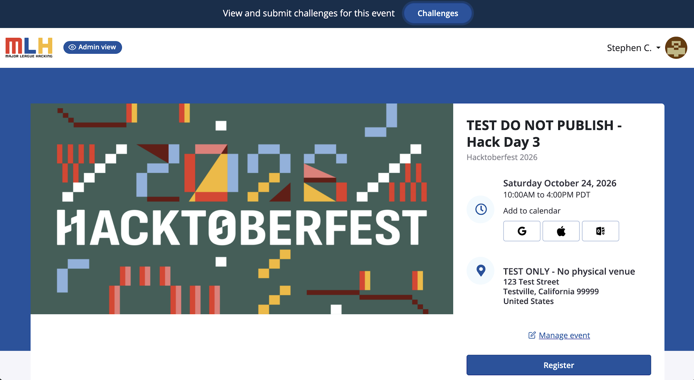
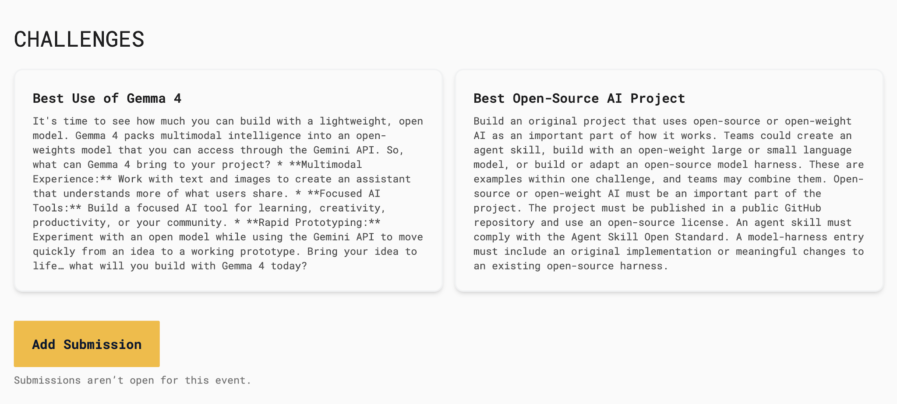
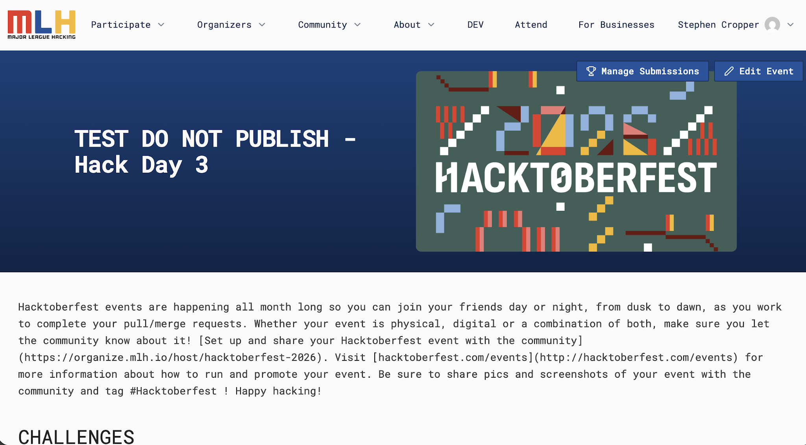
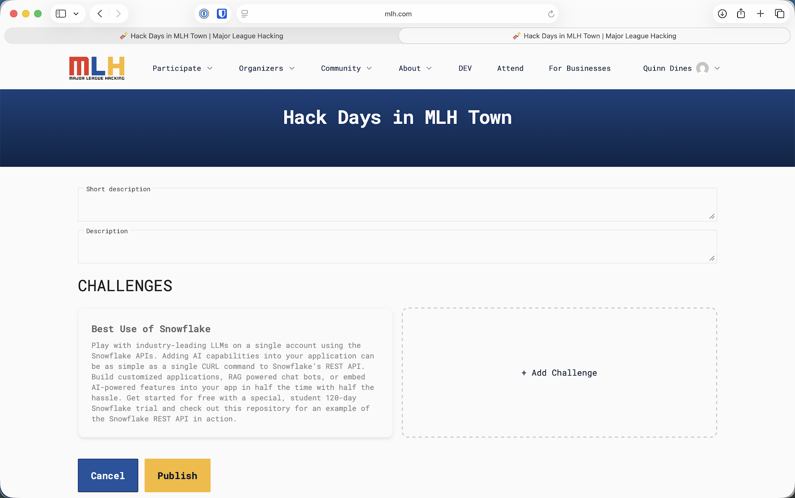
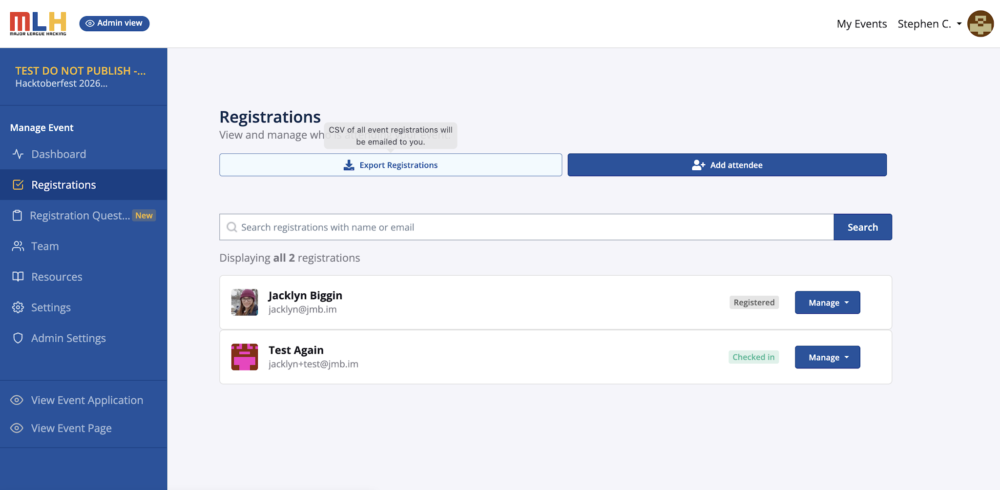
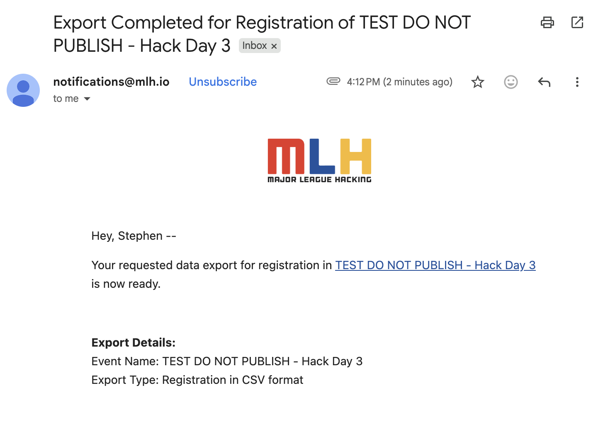
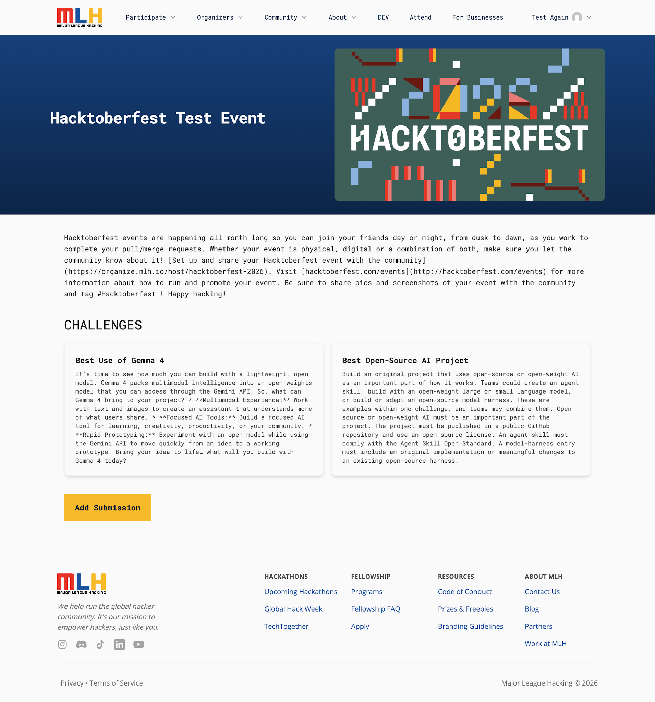
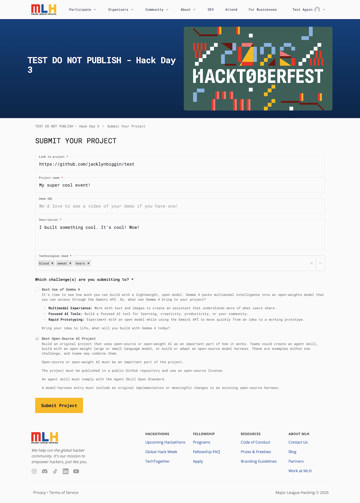

Contenido
| Ver los retos | 3 |
| Agregar un reto propio | 7 |
| Ver las entregas | 11 |
| Entregar un proyecto | 16 |
Para organizadores
Configura los retos y gestiona tu evento.
Ver los retos
01
Abre tu evento
Inicia sesión en OrganizerHQ y abre la página de tu evento.

02
Haz clic en Challenges
Usa el botón Challenges, en la parte superior de la página.

03
Revisa los retos
MLH agrega sus retos de forma automática.

Agregar un reto propio
04 · opcional
Abre Edit Event
Con tu cuenta MyMLH de anfitrión, elige Edit Event para agregar retos locales.

05 · opcional
Agrega un reto propio
- + Add Challenge
- Completa los datos
- Publish

06 · opcional
Confirma tu reto propio
Vuelve a Challenges y comprueba que aparece tu nuevo reto local.
Ver las entregas
07
Revisa las entregas
En Manage Event, abre Registrations para ver las entregas.

08
Exporta las entregas
Elige Export Registrations para pedir el CSV con las entregas.
09
Busca el correo de exportación
Te llegará un correo de notifications@mlh.io cuando el archivo esté listo.

Para participantes
Entrega tu proyecto para competir en los retos.
Entregar un proyecto
Antes de las 2:15 p. m.
01
Abre tu evento
Inicia sesión con tu cuenta de MLH y abre la página del evento.
02
Haz clic en Challenges
Usa el botón Challenges, en la parte superior de la página.
03
Haz clic en Add Submission
Abre la página Challenges de tu evento y elige Add Submission.

04
Escribe los datos del proyecto
- Repositorio del proyecto
- Nombre del proyecto
- Descripción
- Tecnologías usadas
- URL de la demo: opcional

05
Elige los retos y entrega
Marca todos los retos en los que compites.
Haz clic en Submit Project.
En nuestro Hack Day, las entregas cierran a las 2:15 p. m.